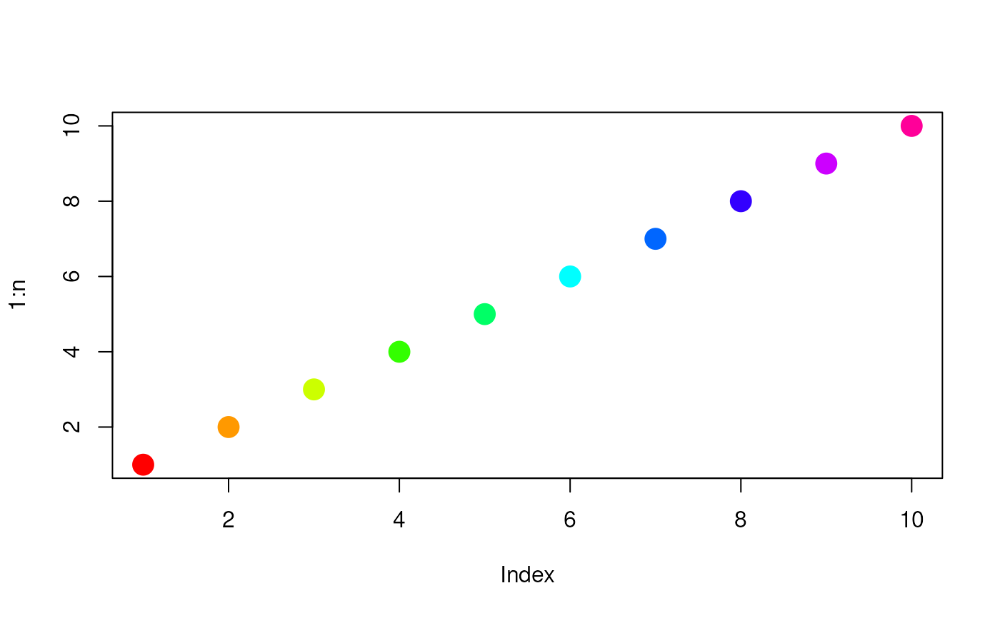

ExperimentColorMap class
Arguments
- assays
List of colormaps for
assays.- colData
List of colormaps for
colData.- rowData
List of colormaps for
rowData.- all_discrete
Colormaps applied to all undefined categorical
assays,colData, androwData, respectively.- all_continuous
Colormaps applied to all undefined continuous
assays,colData, androwData, respectively.- global_discrete
Colormap applied to all undefined categorical covariates.
- global_continuous
Colormap applied to all undefined continuous covariates.
- ...
additional arguments passed on to the
ExperimentColorMapconstructor
Details
Colormaps must all be functions that take at least one argument: the number
of (named) colours to return as a character vector.
This argument may be ignored in the body of the colormap function
to produce constant colormaps.
Categorical colormaps
The default categorical colormap emulates the default ggplot2 categorical color palette (Credit: https://stackoverflow.com/questions/8197559/emulate-ggplot2-default-color-palette). This palette returns a set of colors sampled in steps of equal size that correspond to approximately equal perceptual changes in color:
To change the palette for all categorical variables,
users must supply a colormap that returns a similar value;
namely, an unnamed character vector of length n.
For instance, using the base R palette rainbow.colors
function(n) {
rainbow(n)
}Accessors
In the following code snippets, x is an ExperimentColorMap object.
assayColorMap(x, i, ..., discrete=FALSE):Get an
assayscolormap for the specified assayi.colDataColorMap(x, i, ..., discrete=FALSE):Get a
colDatacolormap for the specifiedcolDatacolumni.rowDataColorMap(x, i, ..., discrete=FALSE):Get a
rowDatacolormap for the specifiedrowDatacolumni.
If the colormap for i cannot be found, one of the default colormaps is returned.
In this case, discrete is a logical scalar that indicates whether the colormap should be categorical.
The more specialized default is first attempted -
e.g., for assayColorMap, this would be the assay colormap specified in assays of all_discrete or all_continuous -
before falling back to the global default in global_discrete or global_continuous.
Similarly, if i is missing, the default discrete/continuous colormap is returned.
Setters
In the following code snippets, x is an ExperimentColorMap object,
and i is a character or numeric index.
assayColorMap(x, i, ...) <- value:Set an
assayscolormap.colDataColorMap(x, i, ...) <- value:Set a
colDatacolormap.rowDataColorMap(x, i, ...) <- value:Set a
rowDatacolormap.assay(x, i, ...) <- value:Alias. Set an
assayscolormap.
Examples
# Example colormaps ----
count_colors <- function(n){
c("black", "brown", "red", "orange", "yellow")
}
fpkm_colors <- viridis::inferno
tpm_colors <- viridis::plasma
qc_color_fun <- function(n){
qc_colors <- c("forestgreen", "firebrick1")
names(qc_colors) <- c("Y", "N")
return(qc_colors)
}
# Constructor ----
ecm <- ExperimentColorMap(
assays=list(
counts=count_colors,
tophat_counts=count_colors,
cufflinks_fpkm=fpkm_colors,
rsem_tpm=tpm_colors
),
colData=list(
passes_qc_checks_s=qc_color_fun
)
)
# Accessors ----
# assay colormaps
assayColorMap(ecm, "logcounts") # [undefined --> default]
#> function (n, alpha = 1, begin = 0, end = 1, direction = 1, option = "D")
#> {
#> if (begin < 0 | begin > 1 | end < 0 | end > 1) {
#> stop("begin and end must be in [0,1]")
#> }
#> if (abs(direction) != 1) {
#> stop("direction must be 1 or -1")
#> }
#> if (n == 0) {
#> return(character(0))
#> }
#> if (direction == -1) {
#> tmp <- begin
#> begin <- end
#> end <- tmp
#> }
#> option <- switch(EXPR = option, A = "A", magma = "A", B = "B",
#> inferno = "B", C = "C", plasma = "C", D = "D", viridis = "D",
#> E = "E", cividis = "E", F = "F", rocket = "F", G = "G",
#> mako = "G", H = "H", turbo = "H", {
#> warning(paste0("Option '", option, "' does not exist. Defaulting to 'viridis'."))
#> "D"
#> })
#> map <- viridisLite::viridis.map[viridisLite::viridis.map$opt ==
#> option, ]
#> map_cols <- grDevices::rgb(map$R, map$G, map$B)
#> fn_cols <- grDevices::colorRamp(map_cols, space = "Lab",
#> interpolate = "spline")
#> cols <- fn_cols(seq(begin, end, length.out = n))/255
#> grDevices::rgb(cols[, 1], cols[, 2], cols[, 3], alpha = alpha)
#> }
#> <bytecode: 0x55bef7d92198>
#> <environment: namespace:viridisLite>
assayColorMap(ecm, "counts")
#> function (n)
#> {
#> c("black", "brown", "red", "orange", "yellow")
#> }
#> <environment: 0x55bef90dd3d0>
assayColorMap(ecm, "cufflinks_fpkm")
#> function (n, alpha = 1, begin = 0, end = 1, direction = 1)
#> {
#> viridis(n, alpha, begin, end, direction, option = "inferno")
#> }
#> <bytecode: 0x55bef7e14010>
#> <environment: namespace:viridisLite>
assay(ecm, "cufflinks_fpkm") # alias
#> function (n, alpha = 1, begin = 0, end = 1, direction = 1)
#> {
#> viridis(n, alpha, begin, end, direction, option = "inferno")
#> }
#> <bytecode: 0x55bef7e14010>
#> <environment: namespace:viridisLite>
# colData colormaps
colDataColorMap(ecm, "passes_qc_checks_s")
#> function (n)
#> {
#> qc_colors <- c("forestgreen", "firebrick1")
#> names(qc_colors) <- c("Y", "N")
#> return(qc_colors)
#> }
#> <environment: 0x55bef90dd3d0>
colDataColorMap(ecm, "undefined")
#> function (n, alpha = 1, begin = 0, end = 1, direction = 1, option = "D")
#> {
#> if (begin < 0 | begin > 1 | end < 0 | end > 1) {
#> stop("begin and end must be in [0,1]")
#> }
#> if (abs(direction) != 1) {
#> stop("direction must be 1 or -1")
#> }
#> if (n == 0) {
#> return(character(0))
#> }
#> if (direction == -1) {
#> tmp <- begin
#> begin <- end
#> end <- tmp
#> }
#> option <- switch(EXPR = option, A = "A", magma = "A", B = "B",
#> inferno = "B", C = "C", plasma = "C", D = "D", viridis = "D",
#> E = "E", cividis = "E", F = "F", rocket = "F", G = "G",
#> mako = "G", H = "H", turbo = "H", {
#> warning(paste0("Option '", option, "' does not exist. Defaulting to 'viridis'."))
#> "D"
#> })
#> map <- viridisLite::viridis.map[viridisLite::viridis.map$opt ==
#> option, ]
#> map_cols <- grDevices::rgb(map$R, map$G, map$B)
#> fn_cols <- grDevices::colorRamp(map_cols, space = "Lab",
#> interpolate = "spline")
#> cols <- fn_cols(seq(begin, end, length.out = n))/255
#> grDevices::rgb(cols[, 1], cols[, 2], cols[, 3], alpha = alpha)
#> }
#> <bytecode: 0x55bef7d92198>
#> <environment: namespace:viridisLite>
# rowData colormaps
rowDataColorMap(ecm, "undefined")
#> function (n, alpha = 1, begin = 0, end = 1, direction = 1, option = "D")
#> {
#> if (begin < 0 | begin > 1 | end < 0 | end > 1) {
#> stop("begin and end must be in [0,1]")
#> }
#> if (abs(direction) != 1) {
#> stop("direction must be 1 or -1")
#> }
#> if (n == 0) {
#> return(character(0))
#> }
#> if (direction == -1) {
#> tmp <- begin
#> begin <- end
#> end <- tmp
#> }
#> option <- switch(EXPR = option, A = "A", magma = "A", B = "B",
#> inferno = "B", C = "C", plasma = "C", D = "D", viridis = "D",
#> E = "E", cividis = "E", F = "F", rocket = "F", G = "G",
#> mako = "G", H = "H", turbo = "H", {
#> warning(paste0("Option '", option, "' does not exist. Defaulting to 'viridis'."))
#> "D"
#> })
#> map <- viridisLite::viridis.map[viridisLite::viridis.map$opt ==
#> option, ]
#> map_cols <- grDevices::rgb(map$R, map$G, map$B)
#> fn_cols <- grDevices::colorRamp(map_cols, space = "Lab",
#> interpolate = "spline")
#> cols <- fn_cols(seq(begin, end, length.out = n))/255
#> grDevices::rgb(cols[, 1], cols[, 2], cols[, 3], alpha = alpha)
#> }
#> <bytecode: 0x55bef7d92198>
#> <environment: namespace:viridisLite>
# generic accessors
assays(ecm)
#> $counts
#> function (n)
#> {
#> c("black", "brown", "red", "orange", "yellow")
#> }
#> <environment: 0x55bef90dd3d0>
#>
#> $tophat_counts
#> function (n)
#> {
#> c("black", "brown", "red", "orange", "yellow")
#> }
#> <environment: 0x55bef90dd3d0>
#>
#> $cufflinks_fpkm
#> function (n, alpha = 1, begin = 0, end = 1, direction = 1)
#> {
#> viridis(n, alpha, begin, end, direction, option = "inferno")
#> }
#> <bytecode: 0x55bef7e14010>
#> <environment: namespace:viridisLite>
#>
#> $rsem_tpm
#> function (n, alpha = 1, begin = 0, end = 1, direction = 1)
#> {
#> viridis(n, alpha, begin, end, direction, option = "plasma")
#> }
#> <bytecode: 0x55bef9d2e058>
#> <environment: namespace:viridisLite>
#>
assayNames(ecm)
#> [1] "counts" "tophat_counts" "cufflinks_fpkm" "rsem_tpm"
# Setters ----
assayColorMap(ecm, "counts") <- function(n){c("blue", "white", "red")}
assay(ecm, 1) <- function(n){c("blue", "white", "red")}
colDataColorMap(ecm, "passes_qc_checks_s") <- function(n){NULL}
rowDataColorMap(ecm, "undefined") <- function(n){NULL}
# Categorical colormaps ----
# Override all discrete colormaps using the base rainbow palette
ecm <- ExperimentColorMap(global_discrete = rainbow)
n <- 10
plot(1:n, col=assayColorMap(ecm, "undefined", discrete = TRUE)(n), pch=20, cex=3)
